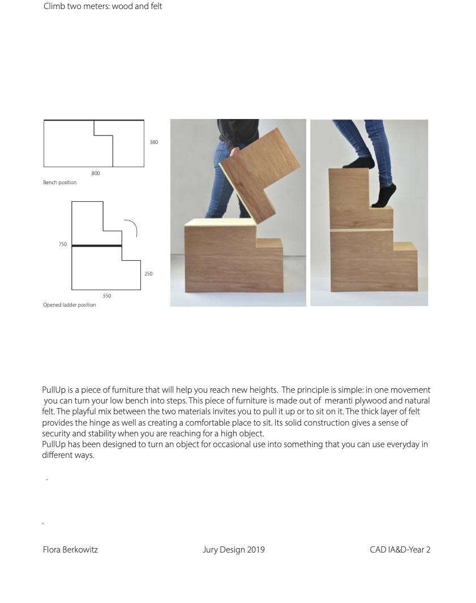

The project investigates the use of computational methods in architecture, focusing on how these technologies can expand and transform traditional design practices. By employing algorithms, the project generates dynamic and interactive designs that reinterpret classical architectural paradoxes, including the Penrose staircase, anamorphosis, and the Da Vinci staircase. These historical forms serve as a foundation for exploring how digital technologies can challenge conventional notions of space and geometry. The emphasis is not only on creating 3D models or animations but on uncovering the computational processes that drive these digital designs, often concealed within user-friendly software interfaces.
Through computational tools like particle systems and polygonal shapes, the project delves into the mathematical and geometric properties of these forms, creating constantly evolving structures that reflect deeper architectural principles. The study offers a critical understanding of the methodologies and technologies used, questioning how these tools can reveal new insights into both historical forms and future architectural practices. By exploring these computational processes, the project challenges the viewer to rethink the role of technology in shaping architectural identities in the modern era.

